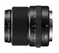

器材库 > 120中幅镜头 > GF 45/2.8 R WR

详细规格
镜头类型
广角镜头
发布日期
2017-09-07
焦距
45mm
等效35mm画幅焦距
36mm
最大光圈
f/2.8
最小光圈
f/32
视角（对角）
62.6°
镜头结构
11片/8组
非球面镜片
1片
低/超低色散镜片
2片
光圈叶片
9片
最近对焦距离
45cm
最大放大倍率
0.14x
滤镜口径
62mm
镜头卡口
Fujifilm G
防抖
否
颜色
黑色
尺寸
84×88mm
重量
490g
附件
镜头盖FLCP-62II，镜头后盖RLCP2，镜头遮光罩，镜头袋
备注
防尘防滴的全天候设计，可在-10℃度环境下正常使用操作。
courbet2019-01-02 21:584.42 分
操作性 4.50耐用性 4.50性价比 3.50解像力 5.00色彩还原 4.50机械结构 4.50
产品图 / 样片
GF 45/2.8 R WR